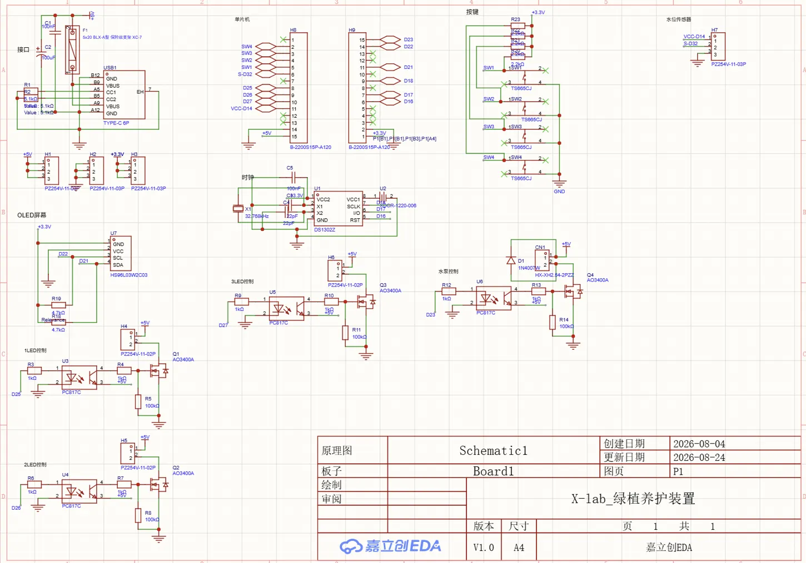
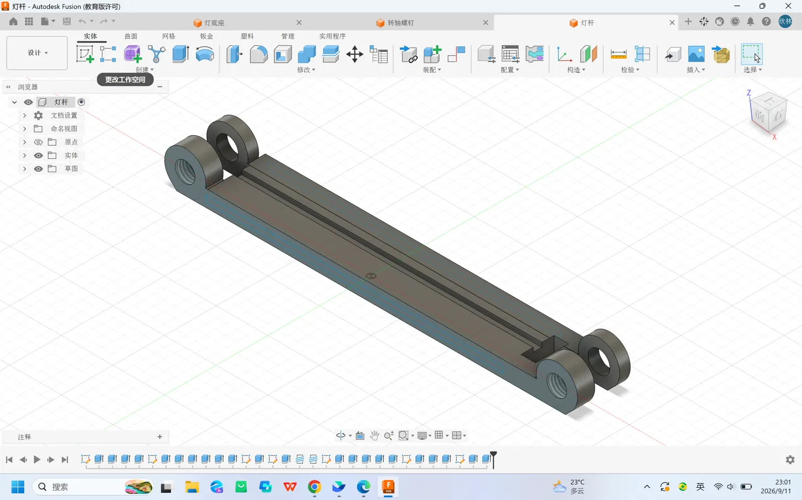
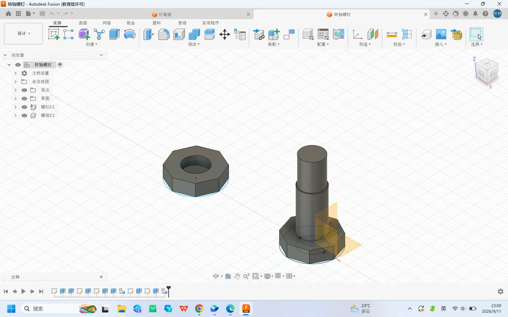
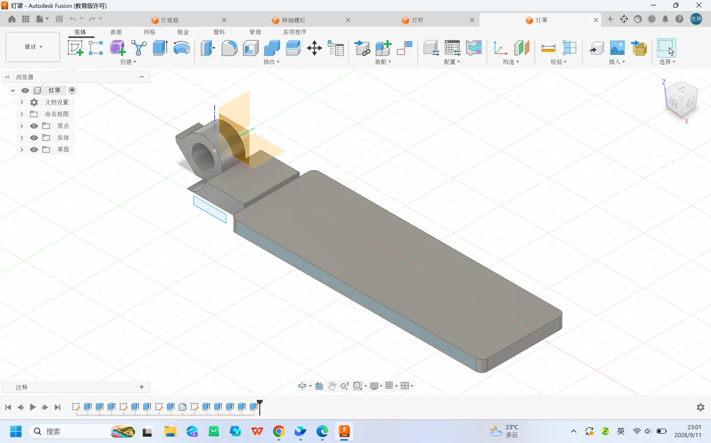
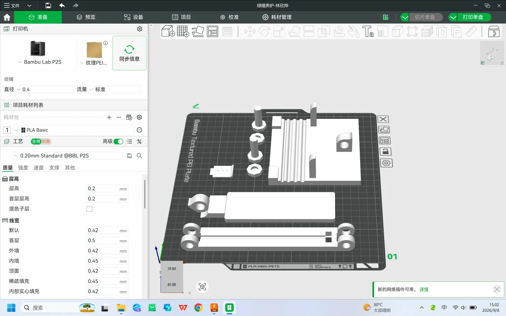
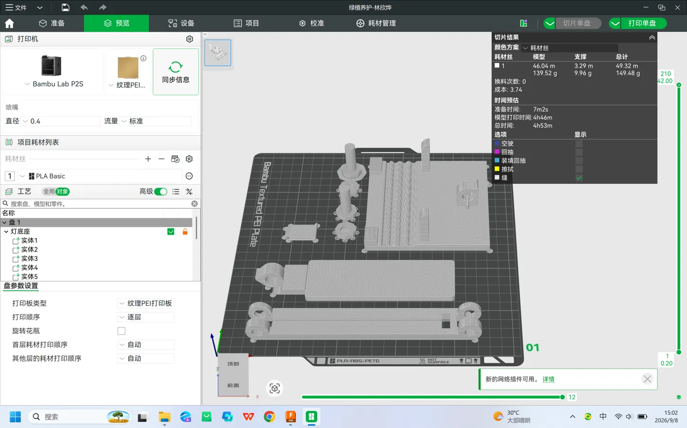
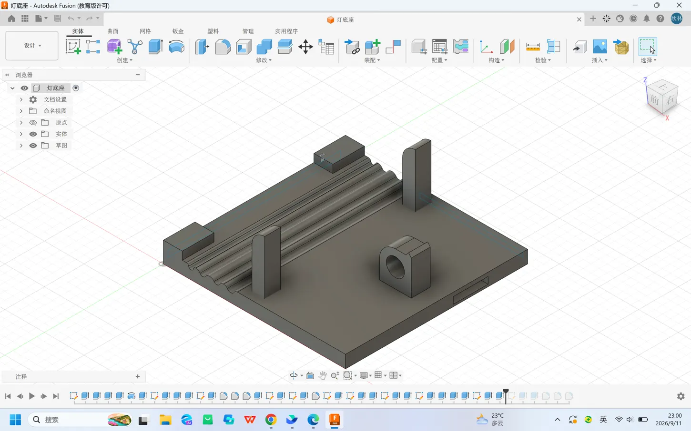

返回硬件项目索引
返回硬件项目索引室内自动绿植养护装置
阅读项目文档 ↓本次提供的是装置概念图。
本项目是一套基于ESP32开发的全自动智能植物养护设备，面向家庭盆栽自动化养护场景。系统集成定时浇水、周期循环浇水、定时补光、水位缺水报警、参数可视化设置功能。设备完成首次网络对时之后，日常运行完全关闭WiFi，依靠硬件时钟计时，全部配置参数断电保存，实现无人值守自动养护植物。









项目文档
项目介绍——自动绿植养护装置
项目介绍——自动绿植养护装置
项目概况
项目名称：室内绿植自动养护装置
mentor：黄千格
项目简介
基础功能
1. 定时定量浇水：支持用户自定义设置浇水间隔、每日浇水时刻和单次水泵工作时长。
2. 定时补光：支持LED灯条定时自动开关，模拟自然日照，避免绿植徒长。 设置白光与红蓝光两种光照模式，每个模式有三种亮度可调。
3. 过流保护：短路或电流过大时保险丝熔断，避免烧坏。
4. 水位监测：水位过低时自动提醒补水。
5. 用户友好交互：通过按键设置参数并在OLED上显示（如当前时间、浇水参数，光照参数等）。
---
嵌入式代码
C++
include <Arduino.h>
include <Adafruit_GFX.h>
include <Adafruit_SSD1306.h>
include <Preferences.h>
include <RtcDS1302.h>
include <ThreeWire.h>
include <WiFi.h>
include <time.h>
const char *WIFI_SSID = "Selina Mate70pro";
const char *WIFI_PASSWORD = "12345678";
constexpr uint8_t RTC_IO = 17, RTC_SCLK = 18, RTC_CE = 16;
constexpr uint8_t PUMP_PIN = 23, LED_WHITE_1 = 25, LED_RED_BLUE = 26, LED_WHITE_2 = 27;
constexpr uint8_t SENSOR_POWER = 14, SENSOR_ADC = 32;
constexpr uint8_t KEY1 = 36, KEY2 = 34, KEY3 = 39, KEY4 = 35;
constexpr uint32_t LONG_PRESS_MS = 2000;
ThreeWire rtcWire(RTC_IO, RTC_SCLK, RTC_CE);
RtcDS1302<ThreeWire> rtc(rtcWire);
Adafruit_SSD1306 display(128, 64, &Wire, -1);
Preferences prefs;
struct Settings { uint8_t mode = 0, t1 = 8, t2 = 20, interval = 6, pumpHalfSeconds = 6, ledOn = 8, ledOff = 20, ledMode = 0, brightness = 60; } settings;
struct Button {
uint8_t pin;
bool raw, stable;
bool eventPending;
uint32_t changedAt, pressedAt, releasedDuration;
explicit Button(uint8_t buttonPin) : pin(buttonPin), raw(HIGH), stable(HIGH), eventPending(false), changedAt(0), pressedAt(0), releasedDuration(0) {}
};
Button buttons[] = {Button(KEY1), Button(KEY2), Button(KEY3), Button(KEY4)};
enum Page { HOME, FIXED_PAGE, INTERVAL_PAGE, PUMP_PAGE, LED_PAGE, SLEEP_PAGE };
Page page = HOME;
tm cachedTime{};
bool rtcValid = false, lowWater = false, rtcSet = false, pumpRunning = false, sensorSampling = false, syncInProgress = false, syncFailed = false;
uint32_t lastRtcRead = 0, lastDisplay = 0, pumpStarted = 0, pumpDurationMs = 0, sensorPoweredAt = 0, intervalStartEpoch = 0;
uint8_t fixedRunDay = 255, fixedRunMask = 0, sampleHour = 255, pendingEvents = 0;
void saveSettings() { prefs.begin("plant", false); prefs.putBytes("settings", &settings, sizeof(settings)); prefs.putULong("intervalStart", intervalStartEpoch); prefs.end(); }
void loadSettings() { prefs.begin("plant", true); if (prefs.getBytesLength("settings") == sizeof(settings)) prefs.getBytes("settings", &settings, sizeof(settings)); intervalStartEpoch = prefs.getULong("intervalStart", 0); rtcSet = prefs.getBool("rtc_is_set", false); prefs.end(); }
bool validDate(const RtcDateTime &value) { return value.Year() >= 2020 && value.Year() <= 2099 && value.Month() >= 1 && value.Month() <= 12; }
uint32_t epochNow() { return rtcValid ? mktime(&cachedTime) : 0; }
void readRtc() {
RtcDateTime value = rtc.GetDateTime(); rtcValid = validDate(value);
if (!rtcValid) { Serial.println("RTC date invalid"); return; }
cachedTime = {}; cachedTime.tm_year = value.Year() - 1900; cachedTime.tm_mon = value.Month() - 1; cachedTime.tm_mday = value.Day(); cachedTime.tm_hour = value.Hour(); cachedTime.tm_min = value.Minute(); cachedTime.tm_sec = value.Second();
if (cachedTime.tm_hour == 0 && cachedTime.tm_min == 0 && cachedTime.tm_sec == 0) { fixedRunMask = 0; sampleHour = 255; }
}
void switchWifiOff() { WiFi.disconnect(true); WiFi.mode(WIFI_OFF); }
bool syncNtp() {
syncInProgress = true; syncFailed = false; display.clearDisplay(); display.setCursor(0, 0); display.print("TIME SYNC..."); display.display(); WiFi.mode(WIFI_STA); WiFi.begin(WIFI_SSID, WIFI_PASSWORD); uint32_t started = millis();
while (WiFi.status() != WL_CONNECTED && millis() - started < 15000) yield(); bool success = false;
if (WiFi.status() == WL_CONNECTED) { configTime(0, 0, "pool.ntp.org", "time.nist.gov"); started = millis(); tm networkTime{}; while (millis() - started < 15000 && !getLocalTime(&networkTime, 100)) yield(); if (networkTime.tm_year >= 120 && networkTime.tm_year <= 199) { rtc.SetDateTime(RtcDateTime(networkTime.tm_year + 1900, networkTime.tm_mon + 1, networkTime.tm_mday, networkTime.tm_hour, networkTime.tm_min, networkTime.tm_sec)); prefs.begin("plant", false); prefs.putBool("rtc_is_set", true); prefs.end(); rtcSet = true; success = true; readRtc(); } }
switchWifiOff(); syncInProgress = false; syncFailed = !success; Serial.println(success ? "NTP sync OK" : "NTP sync failed"); return success;
}
void pwm(uint8_t pin, uint8_t value) { analogWrite(pin, value); }
void stopOutputs() { pwm(PUMP_PIN, 0); pwm(LED_WHITE_1, 0); pwm(LED_RED_BLUE, 0); pwm(LED_WHITE_2, 0); digitalWrite(SENSOR_POWER, LOW); pumpRunning = false; sensorSampling = false; }
void startPump() { if (pumpRunning · · page == SLEEP_PAGE) return; pumpRunning = true; pumpStarted = millis(); pumpDurationMs = uint32_t(settings.pumpHalfSeconds) * 500; pwm(PUMP_PIN, 255); }
void updateButtons() {
uint32_t now = millis(); pendingEvents = 0;
for (uint8_t i = 0; i < 4; ++i) { Button &button = buttons[i]; bool reading = digitalRead(button.pin); if (reading != button.raw) { button.raw = reading; button.changedAt = now; } if (now - button.changedAt >= 20 && reading != button.stable) { button.stable = reading; if (reading == LOW) button.pressedAt = now; else { button.releasedDuration = now - button.pressedAt; button.eventPending = true; pendingEvents · = 1 << i; } } }
}
bool shortEvent(uint8_t index) { return buttons[index].eventPending && buttons[index].releasedDuration < LONG_PRESS_MS; }
bool longEvent(uint8_t index) { return buttons[index].eventPending && buttons[index].releasedDuration >= LONG_PRESS_MS; }
void clearButtonEvents() { for (Button &button : buttons) button.eventPending = false; pendingEvents = 0; }
bool waitingForCombo(uint8_t first, uint8_t second) {
return (longEvent(first) && buttons[second].stable == LOW) · · (longEvent(second) && buttons[first].stable == LOW);
}
void handleKeys() {
if (page == SLEEP_PAGE) { if (longEvent(0)) { page = HOME; clearButtonEvents(); } return; }
bool comboSync = longEvent(0) && longEvent(3), comboInterval = longEvent(1) && longEvent(2);
if (page == HOME) {
if (comboSync) { syncNtp(); clearButtonEvents(); return; }
if (comboInterval) { page = INTERVAL_PAGE; clearButtonEvents(); return; }
if (waitingForCombo(0, 3) · · waitingForCombo(1, 2)) return;
if (longEvent(0)) { page = SLEEP_PAGE; stopOutputs(); clearButtonEvents(); return; }
if (longEvent(1)) page = FIXED_PAGE; else if (longEvent(2)) page = PUMP_PAGE; else if (longEvent(3)) page = LED_PAGE;
}
else if (page == FIXED_PAGE) { if (shortEvent(1)) settings.t1 = (settings.t1 + 1) % 24; if (shortEvent(2)) settings.t2 = (settings.t2 + 1) % 24; if (longEvent(1)) { settings.mode = 0; saveSettings(); page = HOME; } }
else if (page == INTERVAL_PAGE) { if (shortEvent(1)) settings.interval = settings.interval >= 23 ? 1 : settings.interval + 1; if (shortEvent(2) && settings.interval > 1) --settings.interval; if (longEvent(1)) { settings.mode = 1; intervalStartEpoch = epochNow(); saveSettings(); page = HOME; } }
else if (page == PUMP_PAGE) { if (shortEvent(1) && settings.pumpHalfSeconds < 20) ++settings.pumpHalfSeconds; if (shortEvent(2) && settings.pumpHalfSeconds > 1) --settings.pumpHalfSeconds; if (longEvent(2)) { saveSettings(); page = HOME; } }
else if (page == LED_PAGE) { if (shortEvent(1)) settings.ledMode = !settings.ledMode; if (shortEvent(0)) settings.brightness = settings.brightness == 30 ? 60 : settings.brightness == 60 ? 100 : 30; if (shortEvent(2)) settings.ledOn = (settings.ledOn + 1) % 24; if (shortEvent(3)) settings.ledOff = (settings.ledOff + 1) % 24; if (longEvent(3)) { saveSettings(); page = HOME; } }
clearButtonEvents();
}
bool inLedWindow() { if (settings.ledOn == settings.ledOff) return true; return settings.ledOn < settings.ledOff ? cachedTime.tm_hour >= settings.ledOn && cachedTime.tm_hour < settings.ledOff : cachedTime.tm_hour >= settings.ledOn · · cachedTime.tm_hour < settings.ledOff; }
void runLed() { if (page == SLEEP_PAGE · · !rtcValid · · !inLedWindow()) { pwm(LED_WHITE_1, 0); pwm(LED_RED_BLUE, 0); pwm(LED_WHITE_2, 0); return; } uint8_t value = settings.brightness * 255 / 100; pwm(LED_WHITE_1, settings.ledMode ? 0 : value); pwm(LED_WHITE_2, settings.ledMode ? 0 : value); pwm(LED_RED_BLUE, settings.ledMode ? value : 0); }
void runWaterSampling() { if (page == SLEEP_PAGE · · !rtcValid) return; if (!sensorSampling && (cachedTime.tm_hour == 8 · · cachedTime.tm_hour == 20) && cachedTime.tm_min == 0 && cachedTime.tm_sec == 0 && sampleHour != cachedTime.tm_hour) { sampleHour = cachedTime.tm_hour; sensorSampling = true; sensorPoweredAt = millis(); digitalWrite(SENSOR_POWER, HIGH); } if (sensorSampling && millis() - sensorPoweredAt >= 100) { lowWater = analogRead(SENSOR_ADC) < 500; digitalWrite(SENSOR_POWER, LOW); sensorSampling = false; } }
void runWatering() { if (page == SLEEP_PAGE · · !rtcValid) return; if (pumpRunning) { if (millis() - pumpStarted >= pumpDurationMs) { pwm(PUMP_PIN, 0); pumpRunning = false; } return; } if (settings.mode == 0 && cachedTime.tm_min == 0 && cachedTime.tm_sec == 0) { if (fixedRunDay != cachedTime.tm_yday) { fixedRunDay = cachedTime.tm_yday; fixedRunMask = 0; } if (cachedTime.tm_hour == settings.t1 && !(fixedRunMask & 1)) { fixedRunMask · = 1; startPump(); } if (cachedTime.tm_hour == settings.t2 && !(fixedRunMask & 2)) { fixedRunMask · = 2; startPump(); } } else if (settings.mode == 1 && intervalStartEpoch && epochNow() >= intervalStartEpoch + uint32_t(settings.interval) * 3600) { intervalStartEpoch = epochNow(); saveSettings(); startPump(); } }
void drawScreen() {
if (millis() - lastDisplay < 250) return; lastDisplay = millis(); display.clearDisplay(); display.setTextSize(1); display.setTextColor(SSD1306_WHITE); display.setCursor(0, 0);
if (syncInProgress) display.print("TIME SYNC..."); else if (syncFailed) display.print("TIME SYNC FAIL"); else if (!rtcValid) display.print("RTC INVALID"); else { char line[24]; snprintf(line, sizeof(line), "%04d-%02d-%02d %02d:%02d", cachedTime.tm_year + 1900, cachedTime.tm_mon + 1, cachedTime.tm_mday, cachedTime.tm_hour, cachedTime.tm_min); display.print(line); }
if (page == SLEEP_PAGE) { display.display(); return; }
display.setCursor(0, 16); if (page == FIXED_PAGE) { display.print("FIXED T1:"); display.print(settings.t1); display.print(" T2:"); display.print(settings.t2); } else if (page == INTERVAL_PAGE) { display.print("INTERVAL:"); display.print(settings.interval); display.print("h"); } else if (page == PUMP_PAGE) { display.print("PUMP:"); display.print(settings.pumpHalfSeconds / 2); display.print(settings.pumpHalfSeconds % 2 ? ".5s" : ".0s"); } else if (page == LED_PAGE) { display.print("LED ON:"); display.print(settings.ledOn); display.print(" OFF:"); display.print(settings.ledOff); } else { display.print(settings.mode ? "INT " : "FIX "); display.print(settings.mode ? settings.interval : settings.t1); display.print("h P:"); display.print(settings.pumpHalfSeconds / 2); display.print(settings.pumpHalfSeconds % 2 ? ".5s" : ".0s"); display.setCursor(0, 32); display.print("LED "); display.print(settings.ledOn); display.print("-"); display.print(settings.ledOff); display.print(settings.ledMode ? " RB " : " WH "); display.print(settings.brightness); display.print("%"); display.setCursor(0, 48); if (lowWater) display.print("LOW WATER WARNING"); } display.display();
}
void setup() { Serial.begin(115200); pinMode(PUMP_PIN, OUTPUT); pinMode(LED_WHITE_1, OUTPUT); pinMode(LED_RED_BLUE, OUTPUT); pinMode(LED_WHITE_2, OUTPUT); pinMode(SENSOR_POWER, OUTPUT); digitalWrite(SENSOR_POWER, LOW); for (Button &button : buttons) pinMode(button.pin, INPUT); Wire.begin(21, 22); display.begin(SSD1306_SWITCHCAPVCC, 0x3C); display.clearDisplay(); display.display(); rtc.Begin(); loadSettings(); readRtc(); if (!rtcSet) syncNtp(); else switchWifiOff(); }
void loop() { updateButtons(); handleKeys(); if (millis() - lastRtcRead >= 1000) { lastRtcRead = millis(); readRtc(); } runWaterSampling(); runWatering(); runLed(); drawScreen(); }
代码块作用说明
- Settings：所有可配置参数（浇水模式、时间点、间隔、泵时长、LED参数）
- Preferences save/load：参数与 rtc_is_set、intervalStartEpoch 掉电保存
- readRtc()：每秒从 DS1302 取时间并缓存到 cachedTime，所有业务只用缓存
- syncNtp()：开 WiFi → NTP → 合法则写 DS1302 和 rtc_is_set=true → 无论成败都关 WiFi
- updateButtons()：20ms 非阻塞消抖，生成短按/长按事件基础数据
- handleKeys()：页面切换、参数修改、组合键功能（NTP同步/进入间隔设置）
- runWaterSampling()：08:00 / 20:00 上电采样一次，ADC<500 置缺水，状态保持到下次采样
- runWatering()：
- 定点模式：T1/T2 整点触发，单日防重复
- 间隔模式：从保存时刻起每 N 小时触发
- runLed()：按开关灯时间窗决定是否点亮，模式控制白光/红蓝，亮度按百分比映射 PWM
- drawScreen()：根据页面显示时间、配置、告警、同步状态
- SLEEP_PAGE：软件休眠，停业务，仅显示第一行时间，长按 SW1 退出
第二次迭代
C++
include <Arduino.h>
include <Wire.h>
include <Adafruit_GFX.h>
include <Adafruit_SSD1306.h>
include <Preferences.h>
include <RtcDS1302.h>
include <ThreeWire.h>
include <WiFi.h>
include <time.h>
*// ========================= 用户配置 =========================*
const char *WIFI_SSID = "Selina Mate70pro";
const char *WIFI_PASSWORD = "12345678";
*// DS1302*
constexpr uint8_t RTC_IO = 17, RTC_SCLK = 18, RTC_CE = 16;
*// 输出*
constexpr uint8_t PUMP_PIN = 23;
constexpr uint8_t LED_WHITE_1 = 25;
constexpr uint8_t LED_RED_BLUE = 26;
constexpr uint8_t LED_WHITE_2 = 27;
*// 水位传感器*
constexpr uint8_t SENSOR_POWER = 14;
constexpr uint8_t SENSOR_ADC = 32;
*// 按键（SW1~SW4）*
constexpr uint8_t KEY1 = 36;* // SW1*
constexpr uint8_t KEY2 = 34;* // SW2*
constexpr uint8_t KEY3 = 39;* // SW3*
constexpr uint8_t KEY4 = 35;* // SW4*
constexpr uint32_t LONG_PRESS_MS = 2000;
*// OLED*
Adafruit_SSD1306 display(128, 64, &Wire, -1);
*// RTC*
ThreeWire rtcWire(RTC_IO, RTC_SCLK, RTC_CE);
RtcDS1302<ThreeWire> rtc(rtcWire);
*// NVS*
Preferences prefs;
*// ========================= PWM(LEDC) =========================*
constexpr uint8_t CH_PUMP = 0;
constexpr uint8_t CH_W1 = 1;
constexpr uint8_t CH_RB = 2;
constexpr uint8_t CH_W2 = 3;
void pwmInit() {
ledcSetup(CH_PUMP, 5000, 8);
ledcSetup(CH_W1, 5000, 8);
ledcSetup(CH_RB, 5000, 8);
ledcSetup(CH_W2, 5000, 8);
ledcAttachPin(PUMP_PIN, CH_PUMP);
ledcAttachPin(LED_WHITE_1, CH_W1);
ledcAttachPin(LED_RED_BLUE, CH_RB);
ledcAttachPin(LED_WHITE_2, CH_W2);
}
void pwm(uint8_t pin, uint8_t value) {
if (pin == PUMP_PIN) ledcWrite(CH_PUMP, value);
else if (pin == LED_WHITE_1) ledcWrite(CH_W1, value);
else if (pin == LED_RED_BLUE) ledcWrite(CH_RB, value);
else if (pin == LED_WHITE_2) ledcWrite(CH_W2, value);
}
*// ========================= 数据结构 =========================*
struct Settings {
uint8_t mode = 0;* // 0=定点，1=间隔*
uint8_t t1 = 8;* // 定点1小时*
uint8_t t2 = 20;* // 定点2小时*
uint8_t interval = 6;* // 间隔小时(1~23)*
uint8_t pumpHalfSeconds = 6;* // 0.5s步进，范围1~20 => 0.5~10.0s*
uint8_t ledOn = 8;
uint8_t ledOff = 20;
uint8_t ledMode = 0;* // 0=白光(1+3), 1=红蓝(2)*
uint8_t brightness = 60;* // 30/60/100*
} settings;
struct Button {
uint8_t pin;
bool raw, stable;
bool eventPending;
bool longReported;* // 防止按住时重复触发*
uint32_t changedAt, pressedAt, releasedDuration;
explicit Button(uint8_t p)
: pin(p), raw(HIGH), stable(HIGH), eventPending(false), longReported(false),
changedAt(0), pressedAt(0), releasedDuration(0) {}
};
Button buttons[] = { Button(KEY1), Button(KEY2), Button(KEY3), Button(KEY4) };
enum Page { HOME, FIXED_PAGE, INTERVAL_PAGE, PUMP_PAGE, LED_PAGE, SLEEP_PAGE };
Page page = HOME;
*// ========================= 全局状态 =========================*
tm cachedTime{};
bool rtcValid = false;
bool rtcSet = false;
bool lowWater = false;
bool pumpRunning = false;
bool sensorSampling = false;
bool syncInProgress = false;
bool syncFailed = false;
uint32_t lastRtcRead = 0;
uint32_t lastDisplay = 0;
uint32_t pumpStarted = 0;
uint32_t pumpDurationMs = 0;
uint32_t sensorPoweredAt = 0;
uint32_t intervalStartEpoch = 0;
uint16_t fixedRunDay = 65535;* // tm_yday: 0~365*
uint8_t fixedRunMask = 0;* // bit0=t1, bit1=t2*
uint8_t sampleHour = 255;* // 防同一采样点重复*
uint8_t pendingEvents = 0;
*// ========================= 工具函数 =========================*
bool validDate(const RtcDateTime &v) {
return v.Year() >= 2020 && v.Year() <= 2099 &&
v.Month() >= 1 && v.Month() <= 12 &&
v.Day() >= 1 && v.Day() <= 31;
}
uint32_t epochNow() {
if (!rtcValid) return 0;
tm t = cachedTime;
return (uint32_t)mktime(&t);
}
void saveSettings() {
prefs.begin("plant", false);
prefs.putBytes("settings", &settings, sizeof(settings));
prefs.putULong("intervalStart", intervalStartEpoch);
prefs.end();
}
void loadSettings() {
prefs.begin("plant", true);
if (prefs.getBytesLength("settings") == sizeof(settings)) {
prefs.getBytes("settings", &settings, sizeof(settings));
}
intervalStartEpoch = prefs.getULong("intervalStart", 0);
rtcSet = prefs.getBool("rtc_is_set", false);
prefs.end();
* // 保护边界*
if (settings.interval < 1) settings.interval = 1;
if (settings.interval > 23) settings.interval = 23;
if (settings.pumpHalfSeconds < 1) settings.pumpHalfSeconds = 1;
if (settings.pumpHalfSeconds > 20) settings.pumpHalfSeconds = 20;
if (!(settings.brightness == 30 · · settings.brightness == 60 · · settings.brightness == 100)) {
settings.brightness = 60;
}
settings.t1 %= 24;
settings.t2 %= 24;
settings.ledOn %= 24;
settings.ledOff %= 24;
settings.ledMode = settings.ledMode ? 1 : 0;
settings.mode = settings.mode ? 1 : 0;
}
void readRtc() {
RtcDateTime v = rtc.GetDateTime();
rtcValid = validDate(v);
if (!rtcValid) {
Serial.println("RTC date invalid");
return;
}
cachedTime = {};
cachedTime.tm_year = v.Year() - 1900;
cachedTime.tm_mon = v.Month() - 1;
cachedTime.tm_mday = v.Day();
cachedTime.tm_hour = v.Hour();
cachedTime.tm_min = v.Minute();
cachedTime.tm_sec = v.Second();
mktime(&cachedTime);* // 刷新tm_yday等字段*
* // 每天零点重置防重复标记*
if (cachedTime.tm_hour == 0 && cachedTime.tm_min == 0 && cachedTime.tm_sec == 0) {
fixedRunMask = 0;
sampleHour = 255;
}
}
void switchWifiOff() {
WiFi.disconnect(true);
WiFi.mode(WIFI_OFF);
}
bool syncNtp() {
syncInProgress = true;
syncFailed = false;
display.clearDisplay();
display.setTextSize(1);
display.setTextColor(SSD1306_WHITE);
display.setCursor(0, 0);
display.print("TIME SYNC...");
display.display();
WiFi.mode(WIFI_STA);
WiFi.begin(WIFI_SSID, WIFI_PASSWORD);
uint32_t started = millis();
while (WiFi.status() != WL_CONNECTED && millis() - started < 15000) {
delay(2);
}
bool success = false;
if (WiFi.status() == WL_CONNECTED) {
configTime(0, 0, "pool.ntp.org", "time.nist.gov");
tm netTime{};
started = millis();
while (millis() - started < 15000) {
if (getLocalTime(&netTime, 100)) break;
delay(2);
}
if (netTime.tm_year >= 120 && netTime.tm_year <= 199) {* // 2020~2099*
rtc.SetDateTime(RtcDateTime(
netTime.tm_year + 1900,
netTime.tm_mon + 1,
netTime.tm_mday,
netTime.tm_hour,
netTime.tm_min,
netTime.tm_sec
));
prefs.begin("plant", false);
prefs.putBool("rtc_is_set", true);
prefs.end();
rtcSet = true;
readRtc();
success = true;
}
}
switchWifiOff();
syncInProgress = false;
syncFailed = !success;
Serial.println(success ? "NTP sync OK" : "NTP sync failed");
return success;
}
void stopOutputs() {
pwm(PUMP_PIN, 0);
pwm(LED_WHITE_1, 0);
pwm(LED_RED_BLUE, 0);
pwm(LED_WHITE_2, 0);
digitalWrite(SENSOR_POWER, LOW);
pumpRunning = false;
sensorSampling = false;
}
void startPump() {
if (pumpRunning · · page == SLEEP_PAGE) return;
pumpRunning = true;
pumpStarted = millis();
pumpDurationMs = (uint32_t)settings.pumpHalfSeconds * 500UL;
pwm(PUMP_PIN, 255);
}
*// ========================= 按键 =========================*
void updateButtons() {
uint32_t now = millis();
pendingEvents = 0;
for (uint8_t i = 0; i < 4; ++i) {
Button &b = buttons[i];
bool reading = digitalRead(b.pin);
if (reading != b.raw) {
b.raw = reading;
b.changedAt = now;
}
if ((now - b.changedAt >= 20) && (reading != b.stable)) {
b.stable = reading;
if (reading == LOW) {
b.pressedAt = now;
b.longReported = false;
} else {
b.releasedDuration = now - b.pressedAt;
b.eventPending = true;
pendingEvents · = (1U << i);
}
}
}
}
bool shortEvent(uint8_t idx) {
return buttons[idx].eventPending && buttons[idx].releasedDuration < LONG_PRESS_MS;
}
bool longEventRelease(uint8_t idx) {
return buttons[idx].eventPending && buttons[idx].releasedDuration >= LONG_PRESS_MS;
}
bool isHeldLong(uint8_t idx, uint32_t now) {
return buttons[idx].stable == LOW && (now - buttons[idx].pressedAt >= LONG_PRESS_MS);
}
void clearButtonEvents() {
for (auto &b : buttons) b.eventPending = false;
pendingEvents = 0;
}
void handleKeys() {
uint32_t now = millis();
* // 休眠页：仅响应SW1长按退出*
if (page == SLEEP_PAGE) {
if (isHeldLong(0, now) && !buttons[0].longReported) {
buttons[0].longReported = true;
page = HOME;
clearButtonEvents();
}
return;
}
* // 主界面组合键（按住达到2s即触发）*
if (page == HOME) {
bool comboSync = isHeldLong(0, now) && isHeldLong(3, now);* // SW1+SW4*
bool comboInt = isHeldLong(1, now) && isHeldLong(2, now);* // SW2+SW3*
if (comboSync && !(buttons[0].longReported · · buttons[3].longReported)) {
buttons[0].longReported = buttons[3].longReported = true;
syncNtp();
clearButtonEvents();
return;
}
if (comboInt && !(buttons[1].longReported · · buttons[2].longReported)) {
buttons[1].longReported = buttons[2].longReported = true;
page = INTERVAL_PAGE;
clearButtonEvents();
return;
}
* // 单键长按（主界面）*
if (isHeldLong(0, now) && !buttons[0].longReported) {* // SW1*
buttons[0].longReported = true;
page = SLEEP_PAGE;
stopOutputs();
clearButtonEvents();
return;
}
if (isHeldLong(1, now) && !buttons[1].longReported) {* // SW2*
buttons[1].longReported = true;
page = FIXED_PAGE;
clearButtonEvents();
return;
}
if (isHeldLong(2, now) && !buttons[2].longReported) {* // SW3*
buttons[2].longReported = true;
page = PUMP_PAGE;
clearButtonEvents();
return;
}
if (isHeldLong(3, now) && !buttons[3].longReported) {* // SW4*
buttons[3].longReported = true;
page = LED_PAGE;
clearButtonEvents();
return;
}
}
else if (page == FIXED_PAGE) {
* // SW2短按 T1+1，SW3短按 T2+1，SW2长按(松手)保存退出*
if (shortEvent(1)) settings.t1 = (settings.t1 + 1) % 24;
if (shortEvent(2)) settings.t2 = (settings.t2 + 1) % 24;
if (longEventRelease(1)) {
settings.mode = 0;
saveSettings();
page = HOME;
}
}
else if (page == INTERVAL_PAGE) {
* // SW2短按+1，SW3短按-1，SW2长按(松手)保存退出并以当前时间为起点*
if (shortEvent(1)) settings.interval = (settings.interval >= 23) ? 1 : (settings.interval + 1);
if (shortEvent(2) && settings.interval > 1) settings.interval--;
if (longEventRelease(1)) {
settings.mode = 1;
intervalStartEpoch = epochNow();
saveSettings();
page = HOME;
}
}
else if (page == PUMP_PAGE) {
* // SW2短按 +0.5s，SW3短按 -0.5s，SW3长按保存退出*
if (shortEvent(1) && settings.pumpHalfSeconds < 20) settings.pumpHalfSeconds++;
if (shortEvent(2) && settings.pumpHalfSeconds > 1) settings.pumpHalfSeconds--;
if (longEventRelease(2)) {
saveSettings();
page = HOME;
}
}
else if (page == LED_PAGE) {
* // SW2短按切光源，SW1短按切亮度，SW3短按开灯+1h，SW4短按关灯+1h，SW4长按保存退出*
if (shortEvent(1)) settings.ledMode = !settings.ledMode;
if (shortEvent(0)) {
settings.brightness = (settings.brightness == 30) ? 60 :
(settings.brightness == 60) ? 100 : 30;
}
if (shortEvent(2)) settings.ledOn = (settings.ledOn + 1) % 24;
if (shortEvent(3)) settings.ledOff = (settings.ledOff + 1) % 24;
if (longEventRelease(3)) {
saveSettings();
page = HOME;
}
}
clearButtonEvents();
}
*// ========================= 业务逻辑 =========================*
bool inLedWindow() {
if (!rtcValid) return false;
if (settings.ledOn == settings.ledOff) return true;* // 全天*
if (settings.ledOn < settings.ledOff) {
return cachedTime.tm_hour >= settings.ledOn && cachedTime.tm_hour < settings.ledOff;
} else {
return cachedTime.tm_hour >= settings.ledOn · · cachedTime.tm_hour < settings.ledOff;
}
}
void runLed() {
if (page == SLEEP_PAGE · · !rtcValid · · !inLedWindow()) {
pwm(LED_WHITE_1, 0);
pwm(LED_RED_BLUE, 0);
pwm(LED_WHITE_2, 0);
return;
}
uint8_t value = (uint8_t)(settings.brightness * 255 / 100);
if (settings.ledMode == 0) {* // 白光*
pwm(LED_WHITE_1, value);
pwm(LED_WHITE_2, value);
pwm(LED_RED_BLUE, 0);
} else {* // 红蓝*
pwm(LED_WHITE_1, 0);
pwm(LED_WHITE_2, 0);
pwm(LED_RED_BLUE, value);
}
}
void runWaterSampling() {
if (page == SLEEP_PAGE · · !rtcValid) return;
* // 每日 08:00:00 和 20:00:00 触发一次*
if (!sensorSampling &&
(cachedTime.tm_hour == 8 · · cachedTime.tm_hour == 20) &&
cachedTime.tm_min == 0 &&
cachedTime.tm_sec == 0 &&
sampleHour != cachedTime.tm_hour) {
sampleHour = cachedTime.tm_hour;
sensorSampling = true;
sensorPoweredAt = millis();
digitalWrite(SENSOR_POWER, HIGH);
}
* // 上电稳定后读取ADC*
if (sensorSampling && (millis() - sensorPoweredAt >= 100)) {
int adc = analogRead(SENSOR_ADC);
lowWater = (adc < 500);
digitalWrite(SENSOR_POWER, LOW);
sensorSampling = false;
}
}
void runWatering() {
if (page == SLEEP_PAGE · · !rtcValid) return;
if (pumpRunning) {
if (millis() - pumpStarted >= pumpDurationMs) {
pwm(PUMP_PIN, 0);
pumpRunning = false;
}
return;
}
* // 定点模式：整点触发，单日防重复*
if (settings.mode == 0 && cachedTime.tm_min == 0 && cachedTime.tm_sec == 0) {
if (fixedRunDay != (uint16_t)cachedTime.tm_yday) {
fixedRunDay = (uint16_t)cachedTime.tm_yday;
fixedRunMask = 0;
}
if (cachedTime.tm_hour == settings.t1 && !(fixedRunMask & 0x01)) {
fixedRunMask · = 0x01;
startPump();
return;
}
if (cachedTime.tm_hour == settings.t2 && !(fixedRunMask & 0x02)) {
fixedRunMask · = 0x02;
startPump();
return;
}
}
* // 间隔模式：从 intervalStartEpoch 起每N小时*
if (settings.mode == 1 && intervalStartEpoch != 0) {
uint32_t now = epochNow();
uint32_t step = (uint32_t)settings.interval * 3600UL;
if (now >= intervalStartEpoch + step) {
intervalStartEpoch = now;* // 以当前时刻作为新基点*
saveSettings();
startPump();
}
}
}
*// ========================= 显示 =========================*
void drawScreen() {
if (millis() - lastDisplay < 250) return;
lastDisplay = millis();
display.clearDisplay();
display.setTextSize(1);
display.setTextColor(SSD1306_WHITE);
* // 第1行：时间 / 同步状态*
display.setCursor(0, 0);
if (syncInProgress) {
display.print("TIME SYNC...");
} else if (syncFailed) {
display.print("TIME SYNC FAIL");
} else if (!rtcValid) {
display.print("RTC INVALID");
} else {
char line1[24];
snprintf(line1, sizeof(line1), "%04d-%02d-%02d %02d:%02d",
cachedTime.tm_year + 1900, cachedTime.tm_mon + 1, cachedTime.tm_mday,
cachedTime.tm_hour, cachedTime.tm_min);
display.print(line1);
}
if (page == SLEEP_PAGE) {
display.display();
return;
}
* // 第2行：浇水相关*
display.setCursor(0, 16);
if (page == FIXED_PAGE) {
display.print("FIXED T1:");
display.print(settings.t1);
display.print(" T2:");
display.print(settings.t2);
} else if (page == INTERVAL_PAGE) {
display.print("INTERVAL:");
display.print(settings.interval);
display.print("h");
} else if (page == PUMP_PAGE) {
display.print("PUMP:");
display.print(settings.pumpHalfSeconds / 2);
display.print(settings.pumpHalfSeconds % 2 ? ".5s" : ".0s");
} else if (page == LED_PAGE) {
display.print("LED ON:");
display.print(settings.ledOn);
display.print(" OFF:");
display.print(settings.ledOff);
} else {
display.print(settings.mode ? "INT " : "FIX ");
if (settings.mode) {
display.print(settings.interval);
display.print("h ");
} else {
display.print("T1:");
display.print(settings.t1);
display.print(" T2:");
display.print(settings.t2);
display.print(" ");
}
display.print("P:");
display.print(settings.pumpHalfSeconds / 2);
display.print(settings.pumpHalfSeconds % 2 ? ".5s" : ".0s");
}
* // 第3行：LED参数（HOME页显示）*
if (page == HOME) {
display.setCursor(0, 32);
display.print("LED ");
display.print(settings.ledOn);
display.print("-");
display.print(settings.ledOff);
display.print(settings.ledMode ? " RB " : " WH ");
display.print(settings.brightness);
display.print("%");
}
* // 第4行：水位警告（HOME页显示）*
if (page == HOME) {
display.setCursor(0, 48);
if (lowWater) display.print("LOW WATER WARNING");
}
display.display();
}
*// ========================= Arduino =========================*
void setup() {
Serial.begin(115200);
pinMode(SENSOR_POWER, OUTPUT);
digitalWrite(SENSOR_POWER, LOW);
pinMode(SENSOR_ADC, INPUT);
* // 输出*
pinMode(PUMP_PIN, OUTPUT);
pinMode(LED_WHITE_1, OUTPUT);
pinMode(LED_RED_BLUE, OUTPUT);
pinMode(LED_WHITE_2, OUTPUT);
* // 按键（建议INPUT_PULLUP；若你已有外部2.2k上拉，也可继续使用INPUT）*
for (auto &b : buttons) pinMode(b.pin, INPUT_PULLUP);
pwmInit();
stopOutputs();
* // OLED*
Wire.begin(21, 22);
display.begin(SSD1306_SWITCHCAPVCC, 0x3C);
display.clearDisplay();
display.display();
* // RTC*
rtc.Begin();
* // 参数*
loadSettings();
* // 读取RTC*
readRtc();
* // 首次未校时则自动NTP*
if (!rtcSet) {
syncNtp();
} else {
switchWifiOff();
}
}
void loop() {
updateButtons();
handleKeys();
if (millis() - lastRtcRead >= 1000) {
lastRtcRead = millis();
readRtc();
}
runWaterSampling();
runWatering();
runLed();
drawScreen();
}
1. 头文件与全局配置区
这是引入所需库：
- Arduino.h：Arduino 基础函数
- Wire.h：I2C 通信，用于 OLED
- Adafruit_GFX.h、Adafruit_SSD1306.h：OLED 显示驱动
- Preferences.h：ESP32 的 Flash/NVS 参数存储
- RtcDS1302.h、ThreeWire.h：DS1302 RTC 驱动
- WiFi.h：WiFi 连接与关闭
- time.h：NTP 时间同步、tm 结构体、mktime() 等
WiFi 与引脚定义
用于 NTP 校时的时候连接 WiFi。
定义硬件引脚：
- DS1302：GPIO17 / 18 / 16
- 水泵：GPIO23
- 三路 LED：GPIO25 / 26 / 27
- 水位传感器电源控制：GPIO14
- 水位 ADC：GPIO32
- 四个按键：36 / 34 / 39 / 35
- 长按阈值：2000ms
2. 对象实例区
分别创建：
- OLED 显示对象
- DS1302 三线总线对象
- DS1302 RTC 对象
- Flash 参数存储对象
---
3. PWM（LEDC）控制部分
C++
constexpr uint8_t CH_PUMP = 0;
constexpr uint8_t CH_W1 = 1;
constexpr uint8_t CH_RB = 2;
constexpr uint8_t CH_W2 = 3;
ESP32 的 LEDC PWM 通道编号，每个输出对应一个通道。
C++
void pwmInit() {
ledcSetup(CH_PUMP, 5000, 8);
ledcSetup(CH_W1, 5000, 8);
ledcSetup(CH_RB, 5000, 8);
ledcSetup(CH_W2, 5000, 8);
ledcAttachPin(PUMP_PIN, CH_PUMP);
ledcAttachPin(LED_WHITE_1, CH_W1);
ledcAttachPin(LED_RED_BLUE, CH_RB);
ledcAttachPin(LED_WHITE_2, CH_W2);
}
初始化 4 路 PWM：
- 频率 5000Hz
- 分辨率 8 位（0~255）
- 将 PWM 通道绑定到对应 GPIO
- 用于水泵和 LED 调光
4. 参数结构体 Settings
保存所有用户可配置参数：
- mode：浇水模式
- 0 = 定点浇水
- 1 = 间隔浇水
- t1 / t2：定点模式下两个浇水小时
- interval：间隔模式的周期小时数
- pumpHalfSeconds：泵时长，单位为 0.5 秒步进
- ledOn / ledOff：LED 开关时间
- ledMode：光源模式
- 0 = 白光
- 1 = 红蓝光
- brightness：亮度百分比
5. 按键结构体 Button
用于每个按键的状态管理：
- raw：当前原始读取电平
- stable：消抖后的稳定电平
- eventPending：是否已经生成一次“松手事件”
- longReported：长按是否已经处理过，防止重复触发
- changedAt：电平变化时间
- pressedAt：按下时间
- releasedDuration：松手时按下持续时间
6. 全局状态变量
这些变量表示系统当前运行状态：
- cachedTime：缓存的 RTC 时间
- rtcValid：RTC 读出来的时间是否合法
- rtcSet：Flash 中是否已经标记过 RTC 已校准
- lowWater：最近一次水位检测是否缺水
- pumpRunning：水泵是否正在运行
- sensorSampling：水位传感器是否正在采样
- syncInProgress：正在执行 NTP 同步
- syncFailed：NTP 同步失败
7. 参数保存与加载
C++
void saveSettings() {
prefs.begin("plant", false);
prefs.putBytes("settings", &settings, sizeof(settings));
prefs.putULong("intervalStart", intervalStartEpoch);
prefs.end();
}
把参数写入 Flash，掉电后还能恢复。
- settings：所有配置
- intervalStartEpoch：间隔模式起点
- rtc_is_set：RTC 是否已经校准过
---
8. 读取 DS1302 时间
C++
void readRtc() {
RtcDateTime v = rtc.GetDateTime();
rtcValid = validDate(v);
...
}
每秒读一次 DS1302，把时间转存到 cachedTime。
9. NTP 同步函数 syncNtp()
10. setup() 初始化
打开串口调试。
水位传感器默认断电。
按键设为上拉输入，更稳定。
初始化 PWM，并让所有输出默认关闭。
初始化 OLED I2C。
初始化 RTC，加载参数，读取当前时钟。
首次上电自动 NTP；如果已经校时过，则默认不联网。
11. loop() 主循环
1. 读取按键
2. 处理按键
3. 每秒读一次 RTC
4. 检查水位采样
5. 检查浇水触发
6. 检查 LED 定时
7. 刷新 OLED
电路原理图
供电与USB接口
- USB1：Type-C 接口
- F1：保险丝
- R1 / R2：5.1k 电阻
- C1 / C2：滤波电容
- VBUS / CC / D+ / D- / GND 等引脚
ESP32 单片机接口区
主控核心
引脚基本分别接到：OLED RTC 按键 LED 控制 水泵控制 水位传感器
时钟
- U1：DS1302 时钟芯片
- X1：32.768kHz 晶振
- C3 / C5：晶振相关电容
- U2：可能是时钟模块里的串行/保护连接部分
DS1302 是实时时钟芯片，用于：
- 掉电继续走时
- 提供年、月、日、时、分、秒
DS1302 一般通过三线接口连接 ESP32。
按键
有上拉电阻，作用是：
- 没按键时输入保持高电平
- 按下时拉到低电平
- 避免输入悬空
水位传感器
通常水位传感器输出一个模拟值或电平信号，用来判断：水够不够，是否低水位报警
- D14 作为传感器供电控制
- D32 作为 ADC 采样输入
LED与水泵控制
器件组成PC817 光耦，A03400A MOSFET，电阻，接口
光耦 PC817
- 单片机控制侧与大电流负载侧隔离
- 提高抗干扰能力
- 保护 ESP32
MOSFET
Q1 是功率开关，负责真正带动 LED 负载电流。
电阻
- 限流
- 栅极下拉
- 保证 MOSFET 默认关闭
接口
- 连接外部 LED 负载或灯带。
水泵多一个续流二极管
- 水泵是感性负载，关断瞬间会产生反向电压。二极管用来吸收这个反冲电压，防止 MOSFET 被击穿。
机械结构
灯座设计：分为灯底座，灯杆，灯罩，连接固定的螺钉几个部分
灯底座还可充当手机支架
内部中空，减少耗材与打印时间
打印参数设置展示
AI使用说明
结合数据手册，开源项目，与AI完成电子元器件接线方案
借助AI与网络教程完成嵌入式开发编程
交流与心得（可选）
还有不少不全贴出来了
心得：
第一次尝试从头独立完成一个项目，从电路焊接、PCB调试到程序编写，多次遭遇虚焊、难焊、编程出错等难题，但是受到了很多学长学姐的指导和帮助，在排查试错中锻炼了动手能力，也收获了很多知识和技能，觉得很有意义，痛并快乐着（bushi），虽然这个项目目前还没做完，自己也没有底自己到底能做到什么程度，但是愿竭尽所能，勉力一试。